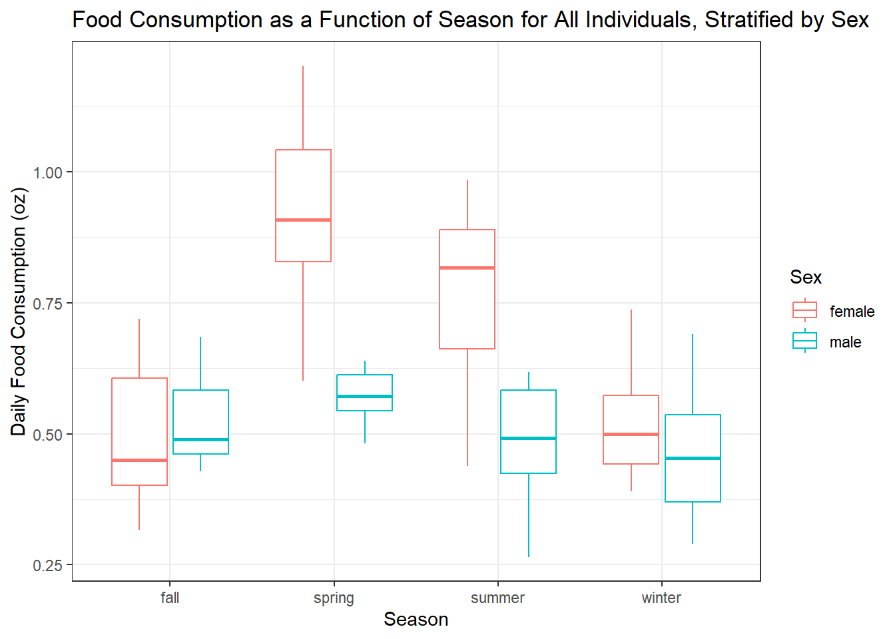
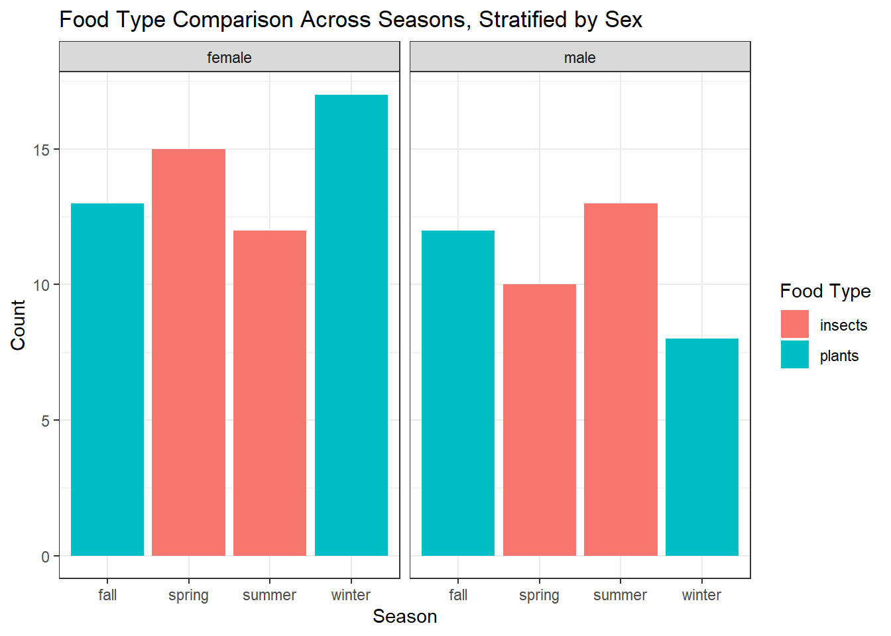

For this exercise, we will generate a synthetic data set that simulates foraging trends of the Northern Mockingbird somewhere in the United States. We will then generate some figures and statistical analyses to explore our new data set. I’ll be using Microsoft Edge AI tools to help generate code. Let’s begin by loading helpful packages for creating synthetic data sets.
# make sure the packages are installed# Load required packageslibrary(dplyr)
Attaching package: 'dplyr'
The following objects are masked from 'package:stats':
filter, lag
The following objects are masked from 'package:base':
intersect, setdiff, setequal, union
library(purrr)library(lubridate)
Warning: package 'lubridate' was built under R version 4.3.2
Attaching package: 'lubridate'
The following objects are masked from 'package:base':
date, intersect, setdiff, union
library(ggplot2)
Warning: package 'ggplot2' was built under R version 4.3.3
library(here)
Warning: package 'here' was built under R version 4.3.2
here() starts at D:/MADA/kevinkosewick-MADA-portfolio
library(tidyverse)
Warning: package 'tidyverse' was built under R version 4.3.2
Warning: package 'readr' was built under R version 4.3.2
Warning: package 'stringr' was built under R version 4.3.2
── Conflicts ────────────────────────────────────────── tidyverse_conflicts() ──
✖ dplyr::filter() masks stats::filter()
✖ dplyr::lag() masks stats::lag()
ℹ Use the conflicted package (<http://conflicted.r-lib.org/>) to force all conflicts to become errors
I’ve entered this prompt into Microsoft Edge copilot: “Write R code that creates data for N=100 Northern Mockingbirds. Individuals ages are randomly distributed between 1 and 14 years. Assume that individuals forage for two types of food: insects and plants. Individuals can consume a combination of either food type at an average of half an ounce daily. Food consumption is measured in ounces every other day. Assume that insects are more plentiful in warmer seasons; this should be reflected in the amount of each food type consumed in each season. The data should be collected over the course of a year.
Create a data frame that contains Food Type, Age, Daily Food Consumption (in ounces), Season, and Sex.
For function calls, specify explicitly the package from which the function comes from.
Add thorough documentation to the code so it is clear what each line of code does.”
This generated the following code:
# Set the seed for reproducibilityset.seed(123)# Define the number of birdsN <-100# Generate random ages between 1 and 14 yearsage <-sample(1:14, N, replace =TRUE)# Define the two types of foodfood_type <-c("insects", "plants")# Define the average daily food consumption in ouncesfood_consumption <-0.5# Define the seasonsseasons <-c("spring", "summer", "fall", "winter")# Define the proportion of insects consumed in each seasoninsect_proportion <-c(0.6, 0.8, 0.4, 0.2)# Define the sexsex <-sample(c("male", "female"), N, replace =TRUE)# Generate the datadata <-tibble(Food_Type =rep(food_type, each = N/2),Age = age,Daily_Food_Consumption =rnorm(N, food_consumption, 0.1),Season =rep(seasons, each = N/4),Sex = sex)# Adjust the food consumption based on the seasondata$Daily_Food_Consumption[data$Food_Type =="insects"] <- data$Daily_Food_Consumption[data$Food_Type =="insects"] *rep(insect_proportion, each = N/2)[data$Season[data$Food_Type =="insects"]]# Print the datadata
# A tibble: 100 × 5
Food_Type Age Daily_Food_Consumption Season Sex
<chr> <int> <dbl> <chr> <chr>
1 insects 3 NA spring female
2 insects 14 NA spring male
3 insects 3 NA spring female
4 insects 10 NA spring male
5 insects 2 NA spring female
6 insects 6 NA spring male
7 insects 11 NA spring male
8 insects 5 NA spring male
9 insects 4 NA spring female
10 insects 14 NA spring female
# ℹ 90 more rows
This is a good start, but there are some problems. First, the AI only gave values of NA to food consumption data collected in the spring and summer. Second, there are an abnormally high number of old birds in the population; in a normal wild population, we’d expect to see more mockingbirds in the 2-8 year range, as 14 is on the old end for a mockingbird. We’ll have the AI correct the data frame with the following prompt:
“Northern Mockingbirds have an average lifespan of 8 years in the wild. Young and elderly individuals have a higher mortality rate. Given this information, please adjust the age variable to more accurately reflect age distribution in a wild population of mockingbirds. Furthermore, mockingbirds consume more food in the spring and summer due to increased energy demands that come with mating and nesting. Please replace the NA food consumption values you gave with randomized values that have an average of 0.5.”
The AI then adjusted our previous code string as follows:
# Set the seed for reproducibility#set.seed(123)# Define the number of birds#N <- 100# Generate random ages between 1 and 14 years#age <- sample(1:14, N, replace = TRUE, prob = c(0.05, 0.05, 0.1, 0.15, 0.2, 0.15, 0.1, 0.05, 0.025, 0.025))# Define the two types of food#food_type <- c("insects", "plants")# Define the average daily food consumption in ounces#food_consumption <- 0.5# Define the seasons#seasons <- c("spring", "summer", "fall", "winter")# Define the proportion of insects consumed in each season#insect_proportion <- c(0.6, 0.8, 0.4, 0.2)# Define the sex#sex <- sample(c("male", "female"), N, replace = TRUE)# Generate the data#data <- tibble(# Food_Type = rep(food_type, each = N/2),# Age = age,# Daily_Food_Consumption = rnorm(N, food_consumption, 0.1),# Season = rep(seasons, each = N/4),# Sex = sex# )# Adjust the food consumption based on the season#data$Daily_Food_Consumption[data$Food_Type == "insects" & (data$Season == "spring" | data$Season == "summer")] <- # data$Daily_Food_Consumption[data$Food_Type == "insects" & (data$Season == "spring" | data$Season == "summer")] * # rep(insect_proportion[1:2], each = sum(data$Food_Type == "insects" & (data$Season == "spring" | data$Season == "summer")))# Replace the NA values with randomized values that have an average of 0.5#data <- data %>% mutate(Daily_Food_Consumption = replace_na(Daily_Food_Consumption, rnorm(sum(is.na(Daily_Food_Consumption)), 0.5, 0.1)))# Print the data#data
This generates a new error in the way the AI created values for the age variable. I gave the AI this prompt to correct the broken lines:
“The issue with NA values has been solved. I now need you to correct the line where you generate random ages between 1 and 14 years to resolve this error: Error in sample.int(length(x), size, replace, prob) : incorrect number of probabilities”
The following code was generated:
# Set the seed for reproducibilityset.seed(123)# Define the number of birdsN <-100# Generate random ages between 1 and 14 years with a probability distribution that reflects the higher mortality rate of young and elderly individualsage <-sample(c(1:4, 5:8, 9:12, 13:14), N, replace =TRUE)# Define the two types of foodfood_type <-c("insects", "plants")# Define the average daily food consumption in ouncesfood_consumption <-0.5# Define the seasonsseasons <-c("spring", "summer", "fall", "winter")# Define the proportion of insects consumed in each seasoninsect_proportion <-c(0.6, 0.8, 0.4, 0.2)# Define the sexsex <-sample(c("male", "female"), N, replace =TRUE)# Generate the datadata <-tibble(Food_Type =rep(food_type, each = N/2),Age = age,Daily_Food_Consumption =rnorm(N, food_consumption, 0.1),Season =rep(seasons, each = N/4),Sex = sex)# Adjust the food consumption based on the seasondata$Daily_Food_Consumption[data$Food_Type =="insects"& (data$Season =="spring"| data$Season =="summer")] <- data$Daily_Food_Consumption[data$Food_Type =="insects"& (data$Season =="spring"| data$Season =="summer")] *rep(insect_proportion[1:2], each =sum(data$Food_Type =="insects"& (data$Season =="spring"| data$Season =="summer")))
Warning in data$Daily_Food_Consumption[data$Food_Type == "insects" &
(data$Season == : number of items to replace is not a multiple of replacement
length
# Replace the NA values with randomized values that have an average of 0.5if (any(is.na(data$Daily_Food_Consumption))) { data <- data %>%mutate(Daily_Food_Consumption =replace_na(Daily_Food_Consumption, rnorm(sum(is.na(Daily_Food_Consumption)), mean(Daily_Food_Consumption), 0.1)))}# Print the datadata
# A tibble: 100 × 5
Food_Type Age Daily_Food_Consumption Season Sex
<chr> <int> <dbl> <chr> <chr>
1 insects 3 0.286 spring female
2 insects 14 0.384 spring male
3 insects 3 0.406 spring female
4 insects 10 0.329 spring male
5 insects 2 0.284 spring female
6 insects 6 0.309 spring male
7 insects 11 0.383 spring male
8 insects 5 0.289 spring male
9 insects 4 0.206 spring female
10 insects 14 0.284 spring female
# ℹ 90 more rows
We seem to have finally generated a data set that should reflect associations we expect to see in the population. However, I’d like to make one more adjustment that reflects increased food consumption by females in the spring and summer due to reproductive demands. I’ll use a 1.75 times increase in food consumption, as data is limited on the exact amounts/averages mockingbirds consume.
# Set the seed for reproducibilityset.seed(123)# Define the number of birdsN <-100# Generate random ages between 1 and 14 years with a probability distribution that reflects the higher mortality rate of young and elderly individualsage <-sample(c(1:4, 5:8, 9:12, 13:14), N, replace =TRUE)# Define the two types of foodfood_type <-c("insects", "plants")# Define the average daily food consumption in ouncesfood_consumption <-0.5# Define the seasonsseasons <-c("spring", "summer", "fall", "winter")# Define the proportion of insects consumed in each seasoninsect_proportion <-c(0.6, 0.8, 0.4, 0.2)# Define the sexsex <-sample(c("male", "female"), N, replace =TRUE)# Generate the datadata <-tibble(Food_Type =rep(food_type, each = N/2),Age = age,Daily_Food_Consumption =rnorm(N, food_consumption, 0.1),Season =rep(seasons, each = N/4),Sex = sex)# Adjust the food consumption based on the season and sexdata$Daily_Food_Consumption[data$Food_Type =="insects"& (data$Season =="spring"| data$Season =="summer") & data$Sex =="female"] <- data$Daily_Food_Consumption[data$Food_Type =="insects"& (data$Season =="spring"| data$Season =="summer") & data$Sex =="female"] *1.75# Replace the NA values with randomized values that have an average of 0.5if (any(is.na(data$Daily_Food_Consumption))) { data <- data %>%mutate(Daily_Food_Consumption =replace_na(Daily_Food_Consumption, rnorm(sum(is.na(Daily_Food_Consumption)), mean(Daily_Food_Consumption), 0.1)))}# Print the datadata
# A tibble: 100 × 5
Food_Type Age Daily_Food_Consumption Season Sex
<chr> <int> <dbl> <chr> <chr>
1 insects 3 0.835 spring female
2 insects 14 0.640 spring male
3 insects 3 1.18 spring female
4 insects 10 0.549 spring male
5 insects 2 0.828 spring female
6 insects 6 0.515 spring male
7 insects 11 0.638 spring male
8 insects 5 0.482 spring male
9 insects 4 0.601 spring female
10 insects 14 0.829 spring female
# ℹ 90 more rows
This dataset looks a lot better. We’ll now check the structure and summary to get a better idea of what we created.
#check the structure and summarysummary(data)
Food_Type Age Daily_Food_Consumption Season
Length:100 Min. : 1.00 Min. :0.2652 Length:100
Class :character 1st Qu.: 5.00 1st Qu.:0.4490 Class :character
Mode :character Median : 8.50 Median :0.5660 Mode :character
Mean : 7.92 Mean :0.6026
3rd Qu.:11.00 3rd Qu.:0.6929
Max. :14.00 Max. :1.2025
Sex
Length:100
Class :character
Mode :character
structure(data)
# A tibble: 100 × 5
Food_Type Age Daily_Food_Consumption Season Sex
<chr> <int> <dbl> <chr> <chr>
1 insects 3 0.835 spring female
2 insects 14 0.640 spring male
3 insects 3 1.18 spring female
4 insects 10 0.549 spring male
5 insects 2 0.828 spring female
6 insects 6 0.515 spring male
7 insects 11 0.638 spring male
8 insects 5 0.482 spring male
9 insects 4 0.601 spring female
10 insects 14 0.829 spring female
# ℹ 90 more rows
Our data looks good and reflects the averages we had the AI incorporate when creating our values. We’ll now create a few plots looking at some relationships in the data.
#create a plot with food consumption as a function of season for all individuals (stratified by sex)ggplot(data, aes(x = Season, y = Daily_Food_Consumption, color = Sex)) +geom_boxplot() +labs(title ="Food Consumption as a Function of Season for All Individuals, Stratified by Sex",x ="Season",y ="Daily Food Consumption (oz)") +theme_bw()

The boxplot shows that our assumptions are reflected in the data set; females consume more in the spring and summer and our average food consumption is 0.5 ounces a day. Now we’ll see if the data accurately shows changes in the primary type of food consumed over the seasons.
#create a histogram comparing food type consumed in different seasons stratified by sexggplot(data, aes(x = Season, fill = Food_Type)) +geom_bar(position ="dodge", stat ="count") +facet_grid(. ~ Sex) +labs(title ="Food Type Comparison Across Seasons, Stratified by Sex",x ="Season",y ="Count",fill ="Food Type") +theme_bw()

The plots show that insects are the predominant food source in the spring and summer while plants dominate the winter and fall. This accurately reflects booms in the insect population in spring and summer; Northern Mockingbirds consume over 85% insects then, dropping to around 15% in the colder seasons. Now that we see our data is tidy, reflects our assumptions and follows the trends we identified, we can fit the data to some linear models.
#create a linear model with season and sex as predictors for food consumptionmodel1<-lm(Daily_Food_Consumption~ Season + Sex, data = data)summary(model1)
Call:
lm(formula = Daily_Food_Consumption ~ Season + Sex, data = data)
Residuals:
Min 1Q Median 3Q Max
-0.27214 -0.11026 -0.01652 0.08739 0.35195
Coefficients:
Estimate Std. Error t value Pr(>|t|)
(Intercept) 0.58657 0.03355 17.483 < 2e-16 ***
Seasonspring 0.26398 0.04267 6.187 1.54e-08 ***
Seasonsummer 0.11562 0.04261 2.713 0.00791 **
Seasonwinter -0.03203 0.04288 -0.747 0.45690
Sexmale -0.16488 0.03079 -5.354 5.95e-07 ***
---
Signif. codes: 0 '***' 0.001 '**' 0.01 '*' 0.05 '.' 0.1 ' ' 1
Residual standard error: 0.1506 on 95 degrees of freedom
Multiple R-squared: 0.4768, Adjusted R-squared: 0.4548
F-statistic: 21.65 on 4 and 95 DF, p-value: 1.023e-12
It seems like winter doesn’t have a significant impact on food consumption, but spring and summer do in the created dataset. Now we’ll move on to make a couple more models.
#create a linear model with season as a predictor for food type# model2<- lm(Food_Type ~ Season, data = data)# summary(model2)
A linear regression didn’t work for this type of data.The above line generated an error message. After consulting with AI, a multinomial logistic regression model would work better. We’ll also include sex as a predictor in this one.
#load the nnet package for this modellibrary(nnet)# Create a multinomial logistic regression model with season and sex as predictors for food typemodel2 <-multinom(Food_Type ~ Season + Sex, data = data)
# weights: 6 (5 variable)
initial value 69.314718
iter 10 value 0.021604
iter 20 value 0.012091
iter 30 value 0.000938
iter 40 value 0.000662
iter 50 value 0.000442
iter 60 value 0.000273
iter 70 value 0.000224
iter 80 value 0.000159
iter 90 value 0.000153
iter 100 value 0.000122
final value 0.000122
stopped after 100 iterations
It seems that the model agrees with our assumptions. The odds of mockingbirds choosing plants over insects are lower in the spring and summer and the opposite in winter. The residual deviance is low, indicating a good fit. We’ve created a pretty good dataset that has the associations and trends we wanted to see.